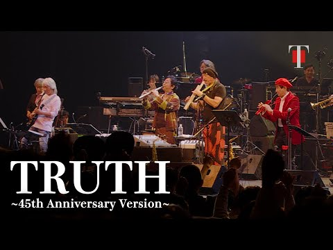

J-FUSION / JAZZ FUSION
T-SQUARE
2026년 10월 11일(일) 오후 6:00 · 연세대학교 대강당확인된 공연 일정
현재 공식 확인된 한국 공연은 1회입니다. 추가 회차나 운영 변경은 연결된 공식 출처에서 다시 확인합니다.
아티스트 소개
색소폰과 EWI, 기타, 키보드와 리듬 섹션이 선명한 멜로디를 주고받는 일본 퓨전 밴드입니다. 익숙한 대표곡도 긴 솔로와 새로운 편곡을 더해 연주 자체를 공연의 중심으로 만듭니다.
T-SQUARE 아티스트 페이지 →공연장 교통 안내
서울 신촌의 연세대학교 교정 안에 있는 좌석 공연장입니다. 정문에서 대강당까지 걷는 시간을 포함해 도착 시각을 잡고, 공연별 입장구·좌석층과 교내 주차 제한은 예매처 최종 공지에서 확인하세요.
교통편과 출입구는 당일 운영 상황에 따라 달라질 수 있습니다. 출발 전 주최사와 공연장 공지를 다시 확인하세요.
공연별 실제 예매 분석
공식 예매처 기준 · 마지막 확인 2026-08-12
- 좌석 등급과 가격
- VIP 143,000원 · R 121,000원 · S 99,000원 · A 77,000원 · W 88,000원
공연 당일 체크리스트
- 2026년 10월 11일(일) 오후 6:00 공연으로 공식 일정에 기록되어 있습니다. 입장·티켓 수령 방법은 주최사와 예매처의 최신 공지를 확인하세요.
- 연세대학교 대강당의 위치·교통·출입 안내는 공식 공연장 안내에서 확인하세요.
- 일반예매 기록은 2026년 7월 9일(목) 오전 10:00입니다. NOL 티켓의 최신 공지를 다시 확인하세요.
- 선예매 상태는 공지 미확인입니다. 팬클럽·주최사·예매처의 추가 공지를 확인하세요.
- 공연일·예매일·가격·공식 출처의 확인일이 다르면 각 원문의 최신 공지를 우선해 확인하세요. 현장 운영과 티켓 수령 조건도 공연별 공지가 최종 기준입니다.
대표곡 미리 듣기
TRUTH, TAKARAJIMA, Legend of Poker ~Turn the Page~ 순서로 들어보면 T-SQUARE의 음악 색깔을 빠르게 파악할 수 있습니다. 각 곡은 공식 YouTube 영상으로 연결됩니다.
T-SQUARE 공연을 더 잘 즐기는 법
여일육 작성 · 편집·검증 기준 · 마지막 일정 검증 2026-07-25
이번 공연의 관전 포인트
T-SQUARE 공연은 노래 대신 색소폰·EWI와 기타가 주선율을 주고받고, 키보드와 리듬 섹션이 곡의 속도와 공간을 바꾸는 과정이 중심입니다. 익숙한 멜로디가 시작된 뒤 각 연주자의 솔로가 어디까지 확장되는지, 다시 합주로 돌아올 때 어떤 신호를 주고받는지 살펴보세요. 좌석 공연이라 무대 전체의 손동작과 멤버 간 호흡을 함께 보기 좋습니다.
공연 전에 듣는 순서
'TRUTH'에서는 질주하는 리듬 위로 선명한 관악기 선율이 올라오는 대표적인 퓨전 사운드를 먼저 익혀 보세요. 'TAKARAJIMA'는 더 서정적인 멜로디가 악기 사이를 이동해 같은 밴드의 부드러운 면을 보여줍니다. 'Legend of Poker ~Turn the Page~'를 마지막에 들으면 현재 레퍼토리의 정교한 연주와 긴 전개를 비교할 수 있습니다.
공연장 도착과 귀가 계획
연세대학교 대강당은 신촌 교정 안에 있어 지하철역이나 버스 정류장에서 건물까지 걷는 시간을 따로 계산해야 합니다. 예매한 좌석의 층과 입장구, 현장 수령 창구 운영 시간을 먼저 확인하세요. 교내 행사와 공연이 겹치면 정문 주변이 혼잡할 수 있으므로 대중교통을 우선하고 공연 종료 뒤 신촌역까지 이동할 시간도 여유 있게 잡는 편이 좋습니다.
공식 출처와 검증 기록
일정 확인 2026-07-25 · 가격 확인 2026-08-12 · 판매 상태 확인 미확인 · 글 수정 2026-07-25